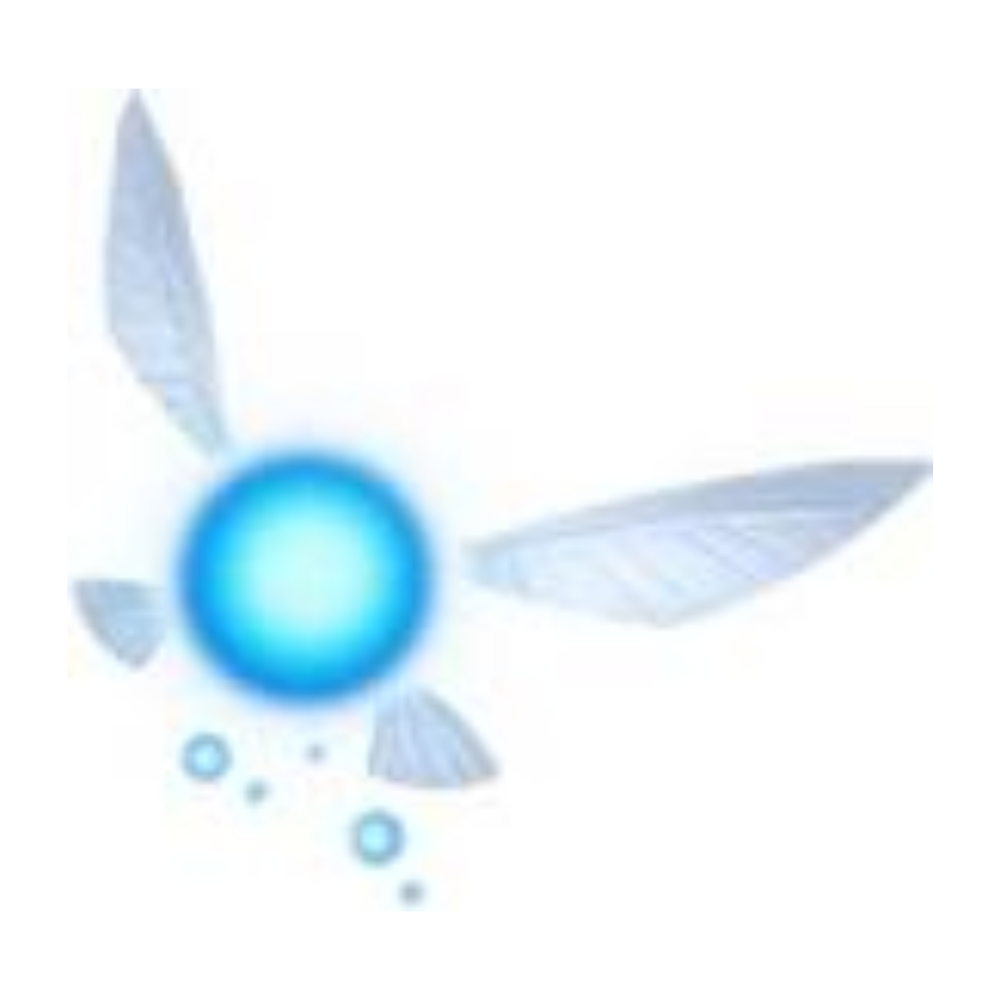
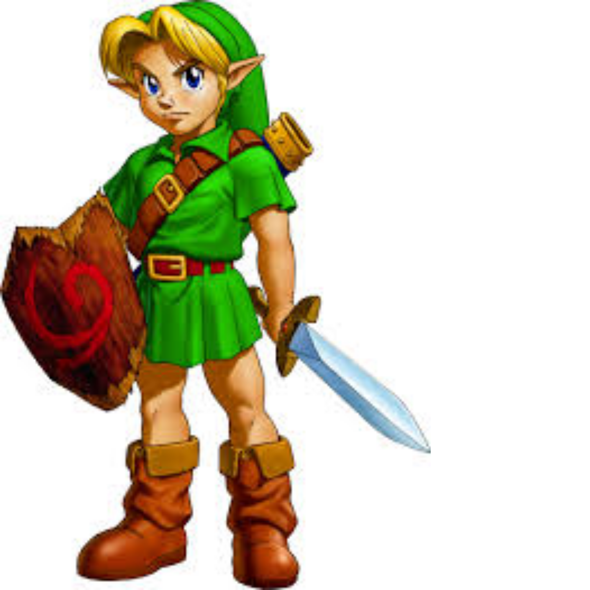
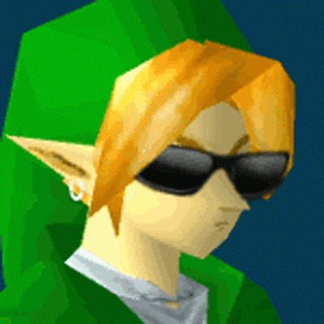

A Tale Across Generations
Widely considered one of the greatest video games of all time, Ocarina of Time follows Link's quest to stop the Gerudo King, Ganondorf, from obtaining the Triforce. By pulling the Master Sword from its pedestal, Link travels seven years into a future where Hyrule has fallen into ruin.
The Child Era
Explore the Lost Woods, meet the Gorons of Death Mountain, and help the Zora in their quest to save Lord Jabu-Jabu. It is a time of innocence before the storm.
The Adult Era
The world has changed. With the Hookshot and the Master Sword in hand, Link must awaken the Sages to seal Ganon in the Sacred Realm once and for all.
Songs of the Ocarina
Music is the key to time, weather, and teleportation. Memorize the melodies:
- Zelda's Lullaby ◀ ▲ ▶ ◀ ▲ ▶
- Epona's Song ▲ ◀ ▶ ▲ ◀ ▶
- Saria's Song ▼ ▶ ◀ ▼ ▶ ◀
- Song of Storms L R ▲ L R ▲
- Song of Time ▶ A ▼ ▶ A ▼
- Sun's Song ▶ ▼ ▲ ▶ ▼ ▲
The Six Sages
To defeat Ganondorf, you must find the medallions from the elemental temples:
- Light: Rauru (Temple of Time)
- Forest: Saria (Forest Temple)
- Fire: Darunia (Fire Temple)
- Water: Ruto (Water Temple)
- Shadow: Impa (Shadow Temple)
- Spirit: Nabooru (Spirit Temple)
The Legend Timeline
Loading timeline...